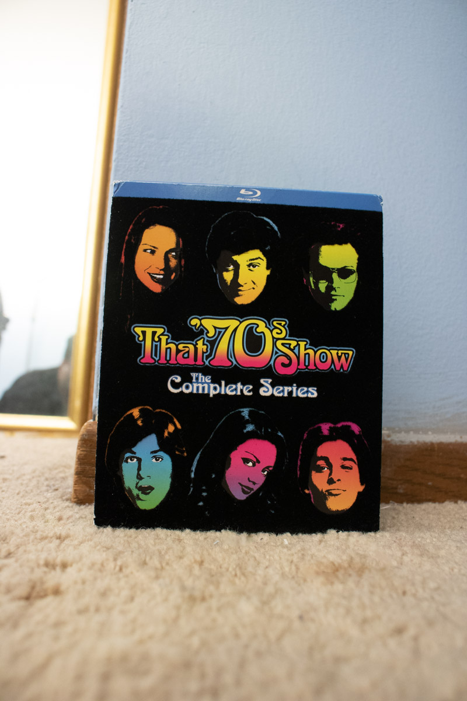
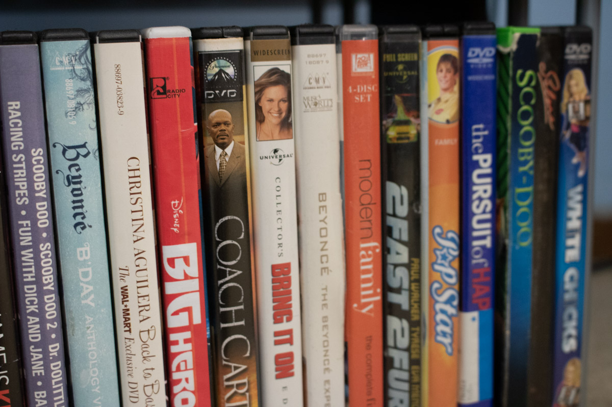

Dive into the World of TV Shows: A Journey Through Genres and the Evolution of TV Watching
Are you ready to explore the fascinating world of TV shows? Buckle up because we're about to take a thrilling ride through different TV show genres and the incredible transformation of how we watch TV. Genres of TV Shows
-
TV shows come in all shapes and sizes, just like your favorite books or snacks. Here are some exciting TV show genres to pique your interest:
- Comedy: These shows are all about laughter. They're like the best joke you've ever heard, but they keep the giggles coming episode after episode.
- Drama: Drama shows are like emotional rollercoasters. They can make you feel all sorts of emotions—happiness, sadness, excitement, and more.
- Science Fiction (Sci-Fi): Imagine traveling to distant planets or encountering futuristic technology. Sci-fi shows take you on mind-bending adventures in worlds beyond our own.
- Fantasy: These shows are full of magic, mythical creatures, and epic quests. They're like stepping into a fairy tale.
- Mystery: If you enjoy solving puzzles and uncovering secrets, mystery shows are like mental workouts. They challenge your detective skills.
- Reality: Reality shows are like a window into other people's lives. You get to see real people facing real challenges, and sometimes, it's just plain entertaining!
- Gathering Around the TV: Back in the day, families and friends used to gather around the TV set in the living room. It was a shared experience, and everyone watched the same shows at the same time.
- Buying DVDs or Blu-Rays: As technology advanced, we could buy DVDs/Blu-Rays of our favorite shows. This allowed us to watch whenever we wanted, pause, and rewind scenes. It was like having a personal TV library.  
- Streaming: The game-changer! Streaming services like Netflix, Hulu, and Disney+ made it possible to watch shows and movies on our own terms. You can pick what you want to watch, when you want to watch it, and where you want to watch it—on your TV, computer, or even your phone.